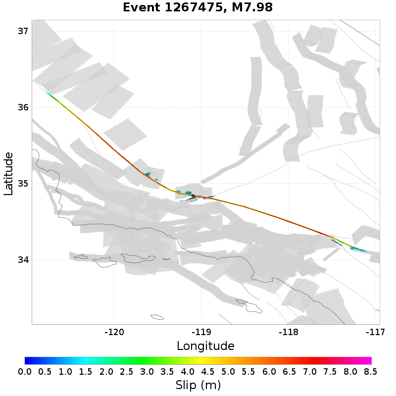
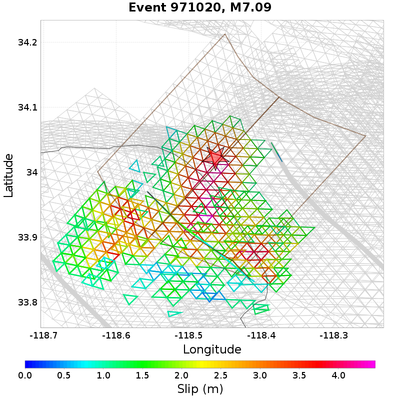

Subsections participate in a rupture if at least 20.0 % of its area ruptures
Total count of mapped UCERF3 subsections (e.g. SAF Mojave S Subsection 3), after application of minimum subsection area filter
| Event ID | Subsection Count | Plot |
|---|---|---|
| 57268 | 97 (Subsection[s]) |  |
| 302755 | 94 (Subsection[s]) |  |
| 850952 | 94 (Subsection[s]) |  |
| 1470835 | 92 (Subsection[s]) |  |
| 1532586 | 90 (Subsection[s]) |  |
Total count of mapped UCERF3 subsections (e.g. SAF Mojave S), after application of minimum subsection area filter

| Event ID | Parent Section Count | Plot |
|---|---|---|
| 1530419 | 13 (Section[s]) |  |
| 1007270 | 12 (Section[s]) |  |
| 774925 | 12 (Section[s]) | |
| 1127055 | 12 (Section[s]) |  |
| 1267475 | 12 (Section[s]) |  |
Ratio of the total rupture length (UCERF3 mapped subsection rupture) to the idealized length, defined as the straight line distance between the furthest 2 subsections
| Event ID | Mapped Length Ratio | Plot |
|---|---|---|
| 840873 | 3.7 |  |
| 533956 | 3.63 |  |
| 1307642 | 3.26 |  |
| 817407 | 3.13 |  |
| 267284 | 3.11 |  |
Total rupture length (UCERF3 mapped subsection rupture) minus the idealized length, defined as the straight line distance between the furthest 2 subsections

| Event ID | Mapped Excess Length | Plot |
|---|---|---|
| 157575 | 198.05 (km) |  |
| 123649 | 184.64 (km) |  |
| 898340 | 183.34 (km) | |
| 653312 | 156.98 (km) |  |
| 382311 | 155.48 (km) |  |
Moment of simulator elements not included in mapped UCERF3 subsection rupture

| Event ID | Moment Off Mapped Rupture | Plot |
|---|---|---|
| 971020 | 1.3959038E19 (N-m) |  |
| 913107 | 1.1689138E19 (N-m) |  |
| 109584 | 1.0601108E19 (N-m) |  |
| 278109 | 1.0428503E19 (N-m) |  |
| 945108 | 9.879665E18 (N-m) |  |
Event Moment Magnitude

| Event ID | Magnitude | Plot |
|---|---|---|
| 57268 | 8.08 | |
| 1508208 | 8.03 |  |
| 302755 | 8.02 | |
| 946919 | 8.02 |  |
| 317661 | 8.02 |  |
Moment that is at least 100km from the nearest mapped subsection (after application of subsection area threshold)
0 events above threshold of 1 [N-m]